If You Still Want Her but Your Body Won’t Respond, This Was Written for You
Let me guess.
You’ve tried everything.
Viagra. Cialis. Testosterone. Pumps. Injections. Shilajit. Maca. Tribulus. That supplement you saw on Instagram...
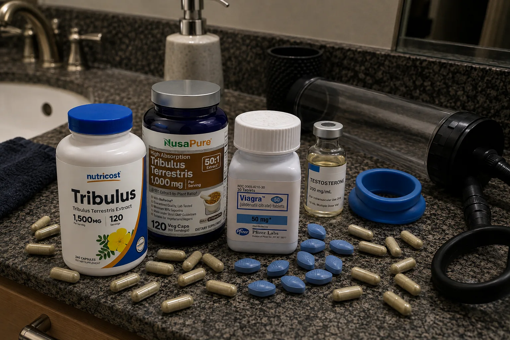
And you’re still here.
Reading this. Searching. Because none of it truly worked.
And that’s the cruelest part. You still want your wife. The desire is there, exactly like it was when you were 30. Maybe even stronger. But somewhere between wanting it and making it happen, something stops.
And then a doctor tells you the four cruelest words a man can hear:
“It’s normal at your age.”
Normal?
As if losing a part of yourself is somehow acceptable just because the calendar turned a few more pages.
I know exactly how much that hurts.
Not because someone told me.
Because it happened to me.
My name is Wade Brennan.
I’ve been a formulator for 25 years.
I’ve spent my life behind the scenes in the pharmaceutical industry, creating, testing, and refining formulas and active ingredients for major companies — determining dosages, combinations, delivery forms, and product stability for products that now sit on pharmacy shelves.
I’m not telling you this to brag.
I’m telling you because none of it prepared me for the day the problem showed up with my own name on it.
I spent two decades solving other people’s problems inside a bottle.
And at 53, I discovered I didn’t know how to solve my own.
22 Years of Marriage. She Wanted Me and I Couldn’t Do It.
It was our wedding anniversary.
I wanted to do something special. Something unforgettable. So I booked a week in the Caribbean.
I had planned that trip for 7 months. I chose the hotel. I chose the room — the one with the oceanfront balcony that cost twice as much, and I paid for it without thinking twice.
And that night she came down to dinner wearing that dress.
We spent the whole evening laughing and drinking wine.
We went upstairs. She kissed me in the elevator the way she hadn’t kissed me in months. She was laughing. She felt light again.
She wanted me. And I simply couldn’t do it.
I wanted her. The desire was all there. I looked at her and wanted her even more than I did at 30.
But my body simply didn’t respond.
I couldn’t get hard enough. I couldn’t keep the erection.
When I tried to have sex, I lost firmness.
I was there with my wife and could feel my body simply... giving up. Fading — right in the middle of the moment.
And then came that moment — you know the one — when both people stop pretending it’s still going to work.
Then she rolled onto her side with her back to me and gave me a frustrated “good night.”
That’s when it started to sink in.
Because it had already been happening for a few weeks. One night yes, one night no. But I was convinced it was just fatigue. Work. Routine. I thought all we needed was to get out of that house, out of that bed, and everything would come back.
After that, I stayed awake until 4 a.m., staring at the ceiling of a room that cost me a month’s salary, listening to the ocean outside, with the woman of my life 12 inches away from me and farther away than she had been in 22 years.
The Question That Destroyed Me
The next morning at breakfast, she moved food around her plate without eating and asked without looking at me:
“Do you still want me? Is this happening because I gained weight?”
That question went through my chest like a knife.
Of course I wanted her. She was the woman I had loved for 22 years. The mother of my children. The person I wanted to grow old with.
And I didn’t know what to say. Because the truth — “it’s not you, it’s my penis that stopped working” — was something I still couldn’t say out loud, not even to myself.
So I told her I was tired. That I still hadn’t fully disconnected from work.
It was the first time I lied to her because of this.
But it wasn’t the last.
I Tried Everything. And I Kept Failing.
You’ve probably been through this list too. I’ll go through it fast, because every item on it cost me a piece of my life.
Viagra. It worked. The first few times. And even when it worked, I hated the feeling of turning sex into an appointment.
I had to think ahead. Plan. Take something. Wait. Hope.
It was like putting a meeting on my calendar: “Maybe I’ll have sex at 10:30 p.m.”
That wasn’t how I remembered my sex life. And worse: even with it, I still had bad nights. Sometimes I could get an erection...
...have sex...
...and a few minutes later I’d start losing firmness.
Then came Cialis. Same story, plus a headache.
Testosterone replacement. Three months. My lab numbers looked beautiful. I felt better in the gym. And in bed, exactly the same. This one confused me the most, because the doctor looked at the paper, saw normal numbers, and said everything was fine. Except it wasn’t.
Supplements. Maca. Tribulus. Shilajit. Anything promising “natural testosterone,” I bought. None of it worked.
Vacuum pump. I bought one and hid it from my wife like it was contraband. It didn’t work, and I just wasted more money.
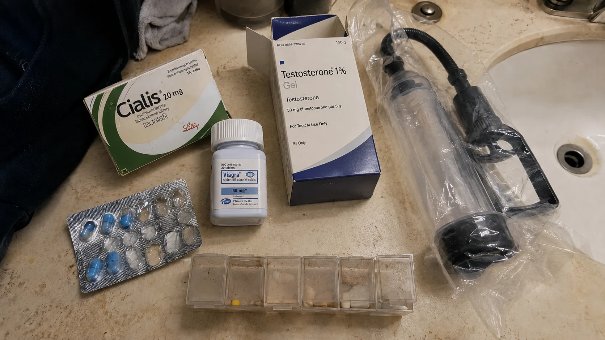
And the pattern never changed: I would get hard, then lose it. Every time. It didn’t matter what I added. It didn’t matter what I changed.
At one point I even started researching surgery and implants.
And I remember thinking:
“How did I end up here?”
I need you to understand something, because it’s probably true for you too:
I wasn’t failing because I didn’t try hard enough. Because of age. Or because I lacked testosterone.
I did everything right, at the right dose, for the right amount of time, with medical supervision. And nothing changed.
The Two Months We Didn’t Touch Each Other
What happened next was quieter. And much worse.
I started avoiding my own wife.
After a while, every time she touched me, I felt pressure.
Not excitement. Pressure.
If her leg touched mine in bed, my mind immediately started:
“What if she wants to?”
“Will I be able to?”
“Should I take something?”
“What if I lose it again?”
So I always went back to the same excuses.
Work. Fatigue. Headache. Going to bed early. Morning meeting.
I pulled away so I wouldn’t risk failing.
Then I started going to bed after she did. I stayed on the couch until I heard her breathing change. Then I went upstairs.
Because if she was already asleep, there was no risk. No moment when her hand came across the sheet and I had to decide, in a second and a half, between failing again or pretending I was tired.
Do you know the worst part about pretending to be asleep? You lie there with your eyes closed, completely still, feeling the hand of the person you love stop halfway toward you... and pull back.
Then she stopped trying.
And here’s the thing almost no man has the courage to say out loud: I felt relieved.
Relieved that the woman I love had stopped wanting me.
Then it was a week. Two. A month.
And before I realized it...
...we had gone almost two months without really touching each other.
We slept side by side. But we felt like roommates.
And then my mind went somewhere I’ve never told anyone about.
I started imagining my wife with another man.
She had never cheated on me. Never given me a reason to think she would.
The fear came from me. I thought:
“How long will a woman accept living like this?”
“What if a man shows up who can do what I can’t anymore?”
A man who didn’t have to hide Viagra in the bathroom.
Who wasn’t afraid to initiate. Who didn’t lose his erection halfway through.
A man who... simply felt like a man.
At that point, it was no longer just a problem. I started living my life convincing myself, every day, that she was going to leave me and that maybe I really did deserve it.
At 1 A.M., Alone in the Lab, I Read One Line That Explained Everything
That’s when I went into emergency mode.
I stopped looking for another drug.
And I started looking for an explanation.
I spent months studying. Not magazine articles. Not health blogs. Not YouTube videos.
Scientific studies. Original research. Theses. Dissertations.
And one night, with my coffee cold and my eyes barely staying open, I read a line I already knew — but had never applied to myself.
An erection isn’t a hormone. It isn’t desire.
An erection is a sponge filling up.
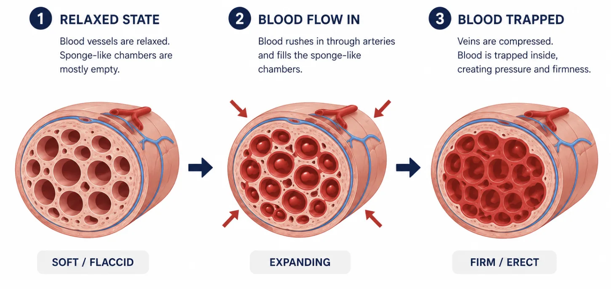
That’s it. That’s the whole machine.
Inside the penis is tissue that works like a sponge. When you become aroused, your brain sends the signal, blood arrives, the tissue expands, traps that blood inside, and locks it in. Full and locked sponge = a hard erection.
That’s how it worked your whole life. That’s how it worked at 20, when it happened on its own, without asking, at the most inconvenient time possible.
Now here’s the part nobody told you.
Imagine that over the years, that sponge has gradually been filled with cement — something hard and rigid.
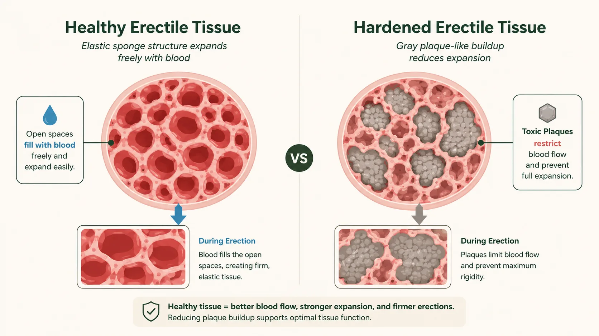
And what causes that “cement” is something called glyphosate, the primary ingredient in Roundup.
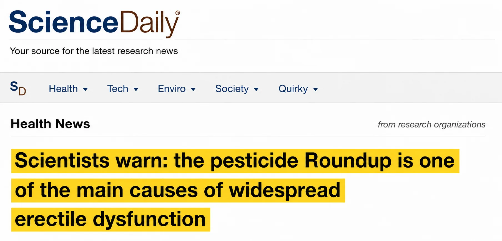
The most widely used herbicide in the world.
It’s in food. Water. Bread. Beer. Meat. It’s everywhere.
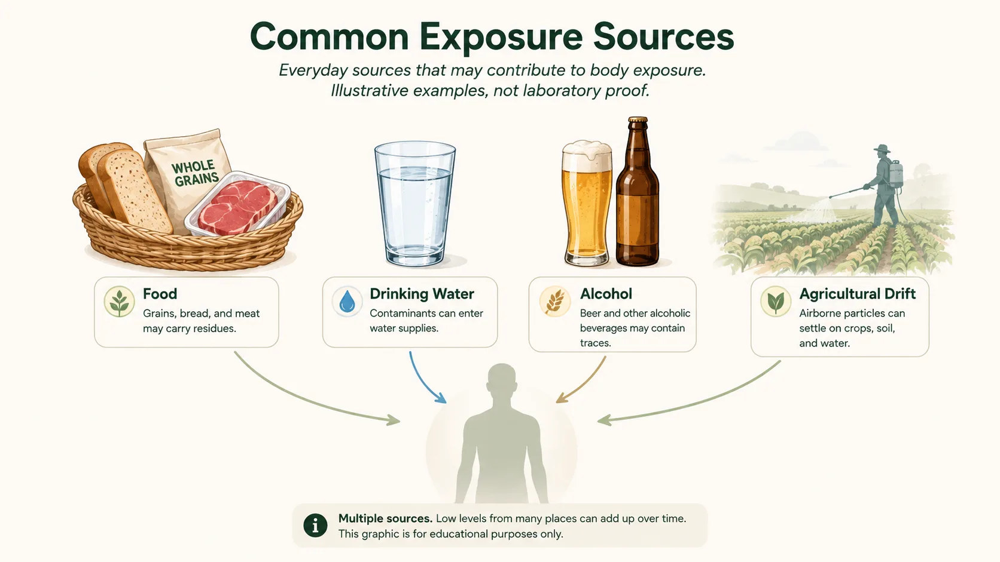
This poison accumulates directly in penile tissue.
It attaches to the elastic part of the sponge — type III collagen, the part that gives the tissue its ability to expand — and over time turns that elasticity into rigidity.
It turns elastic collagen into scar tissue.
And scar tissue doesn’t expand.
Run your hand over an old scar on your arm. It’s hard. It doesn’t stretch. It doesn’t grow. It’s just... there.
That is exactly what is happening inside, slowly, over years.
I call these hardened areas Toxic Plaques. Doctors call it fibrosis.
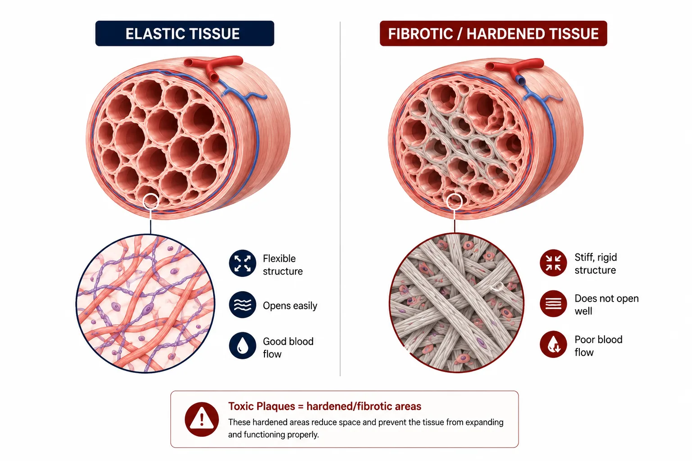
The result? Weak erections. Erections that don’t last. Loss of firmness during penetration. Loss of size and thickness. And the slow death of your sex life.
Why Nothing You Tried Ever Got Close to the Real Problem
This is what took me years to understand:
None of the things I tried were targeting the sponge. They were all targeting the blood or the signal.
Viagra and Cialis increase the amount of blood coming in. That’s all they do. It’s like forcing more water into a garden hose that’s clogged on the inside. The pressure rises, but the water still can’t get through properly.
I call it stepping on the gas with the parking brake on. You can press harder. The car still won’t move properly, and the engine takes the strain.
Testosterone increases the signal. But the signal was never the problem. My desire was there the entire time — but if the tissue can’t respond, what good is a stronger signal?
None of those solutions were addressing the cause.
And now pay attention to what that means in the moment:
You’re aroused. Your brain sent the signal, correctly. Your heart pumped blood there, correctly. Everything upstream is working.
And the tissue that is supposed to receive that blood can’t open.
That’s How I Ended Up Studying Percheron Stallions
So the question changes completely.
It stops being “how do I force more blood in?”
And becomes: “how do I remove the scar tissue?”
And that’s when I found something I already knew as a formulator, but had never once thought to apply to this part of the body in more than 20 years:
Percheron horse tendon gelatin.
Percherons are enormous horses. An animal weighing more than 2,000 pounds. Heavy. Extremely strong.
And their tendons have to withstand enormous forces while staying flexible.
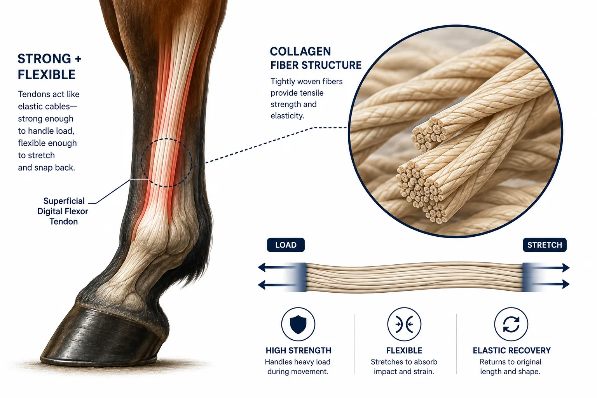
That’s when I discovered that the material in those tendons contains an exceptionally strong, powerful, and efficient type of collagen.
That collagen has a unique property: it can break down scar tissue.
In nature, Percheron collagen is exceptionally strong and elastic. But when it is hydrolyzed — broken into smaller fragments — it acts like a key that dismantles the rigidity of Toxic Plaques.
It was the first time I had seen something that appeared to reverse the damage instead of simply hiding the symptom.
I read it at 11 p.m. and just stared at the screen.
Because penile erectile tissue is made from the same broader family of structural fibers found in tendons. It was the same kind of engineering problem. The same kind of material problem.
And nobody, anywhere, had connected the two.
I Took It by Itself for Five Weeks. Nothing Happened.
This is where I need you to pay very close attention, because this part is exactly what happened to you if you already tried the “Horse Gelatin Trick.”
I got the gelatin. I took it every morning.
Five weeks. Absolutely nothing.
I almost threw it away. Almost wrote it down in my notebook as one more dead hypothesis next to the other 40.
And what stopped me was something so basic I should have remembered it on day one — and only remembered because it is literally my job:
Raw material is not a finished structure.
You can dump a truckload of bricks in front of an empty lot. A wall still won’t build itself.
The bricklayer was missing.
And when I added the bricklayer, something changed within seven days.
But it still wasn’t enough. Because I discovered two more pieces were missing.
Then I Revealed It for the First Time
When it was finally complete — all four, in the right order — I took it for 12 weeks.
And what happened during those weeks, I’ll tell you in a moment.
But first I felt like I had to share the discovery with someone.
So, using an account that didn’t reveal my name, I posted my story on a Reddit forum.
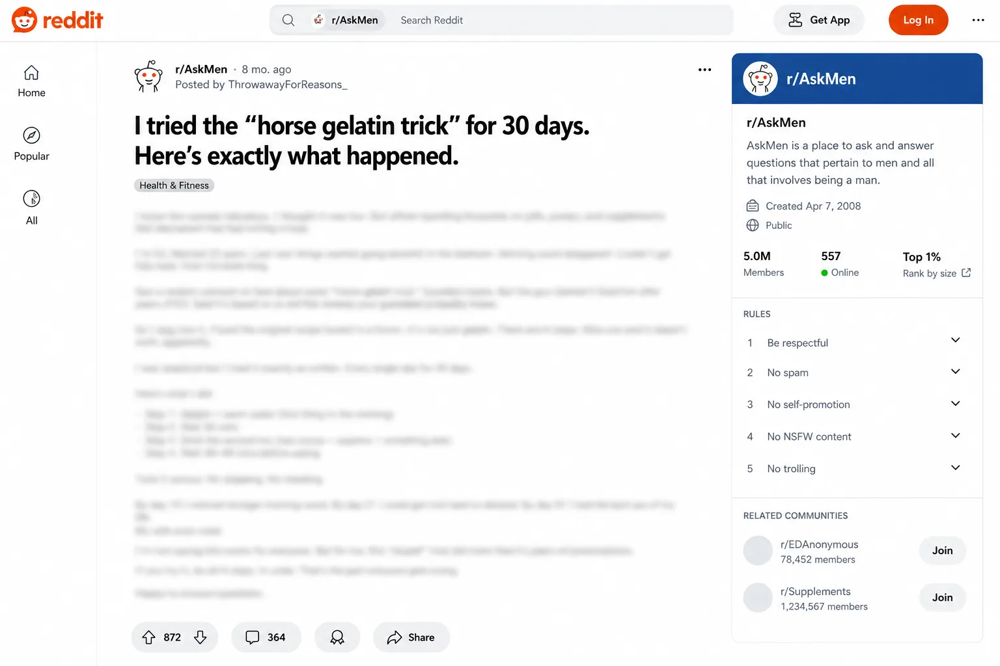
I thought a few dozen men would read it. Maybe a few would comment. And that would be the end of it.
It wasn’t.
The post started getting shared. Then someone summarized it.
Someone else recorded a video. Someone copied the video.
And at some point, someone started calling it:
“30-Second Horse Gelatin Trick.”
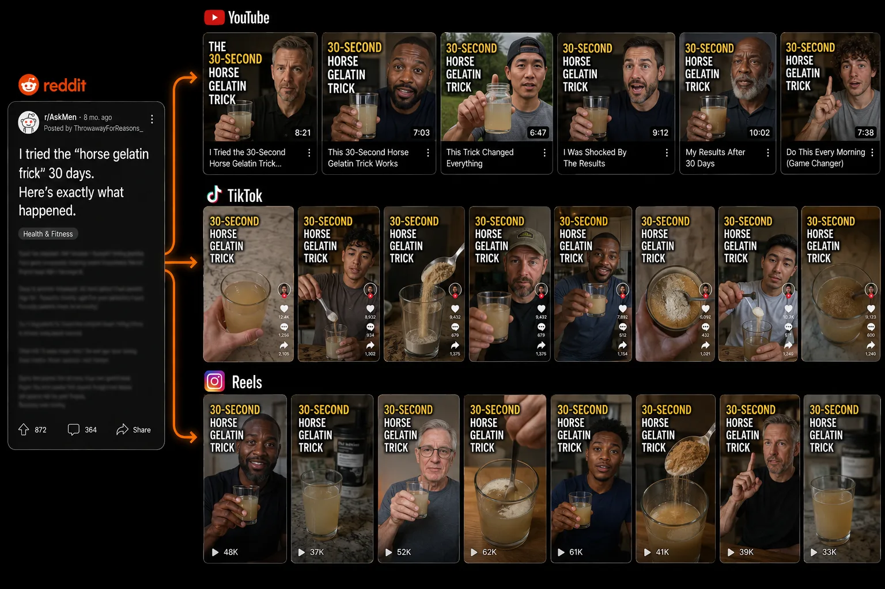
And that’s when it got out of control.
Because the internet did what the internet always does.
It took something simple... simplified it even more... until it became wrong.
What survived in the videos was the horse. Just the horse. Because the horse is the part that gets views.
The other three steps — the three that make the whole thing work — don’t make good videos. They aren’t visually dramatic.
And today there are thousands of men taking horse gelatin by itself, every day, exactly the way I took it during my first five weeks — and feeling exactly what I felt.
Nothing.
Maybe you already tried one of these ingredients by itself and felt nothing.
That doesn’t mean the system doesn’t work. It means the four act in synergy. Remove any one from the equation and the structure falls apart.
Like a 4-legged chair. Remove one leg, and it collapses.
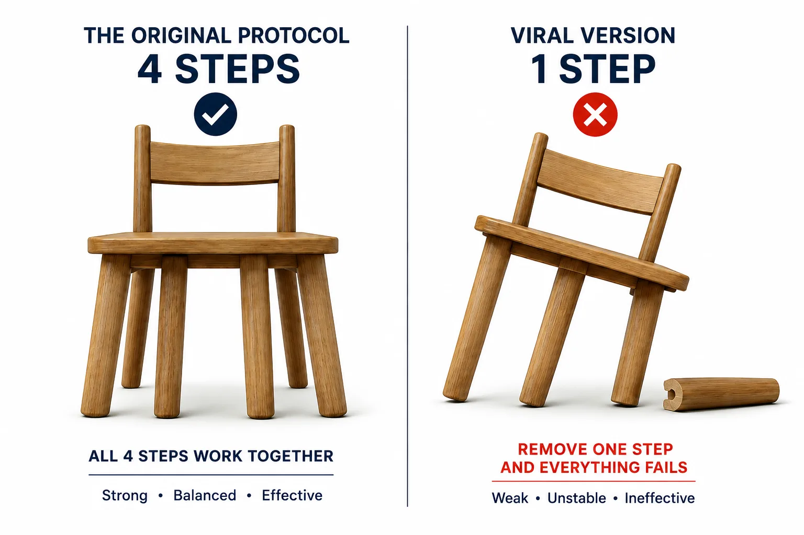
And that is exactly what the viral videos never explain.
Let me show you why the order matters.
STEP 1 — DISSOLVE (The Horse Gelatin Trick)
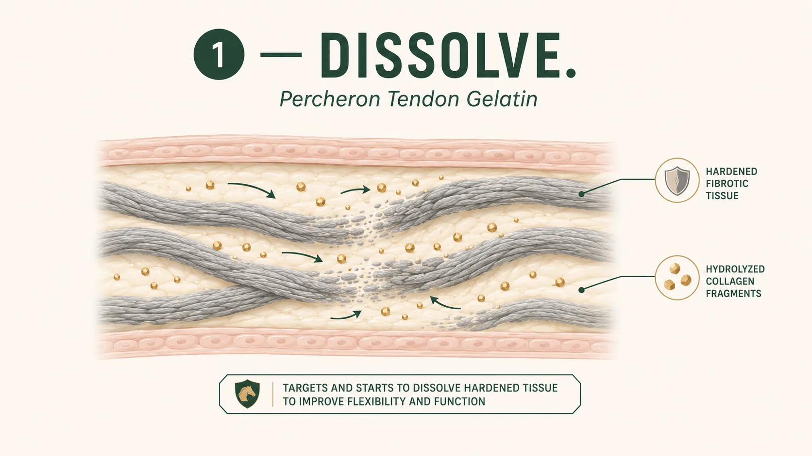
Hydrolyzed Percheron collagen enters the tissue and goes directly to the Toxic Plaques. It acts like a natural solvent, breaking up the rigidity, dissolving scar tissue, and preparing the area for rebuilding.
It’s the “30-second gelatin trick” everyone is talking about.
It is the first leg of the chair. Without it, nothing starts. But by itself, it does not finish the job.
STEP 2 — REBUILD (Liposomal Vitamin C)
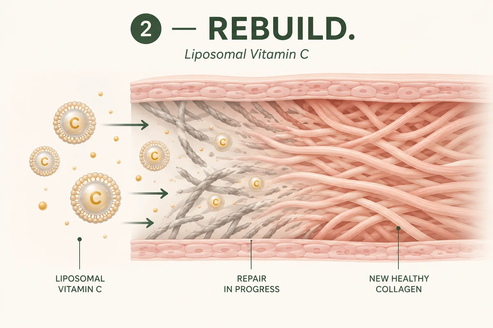
Once the plaques are dissolved, you need to rebuild what was lost. This is where liposomal vitamin C comes in.
Why? Because the body needs vitamin C to make new collagen — the elastic type III collagen that expands and holds blood.
And the liposomal form is the only one that can deliver that vitamin exactly where it needs to be: into penile tissue, at the right depth.
This is the second leg. Without it, you dissolve the scar tissue but build nothing new in its place.
STEP 3 — PROTECT (Pycnogenol)
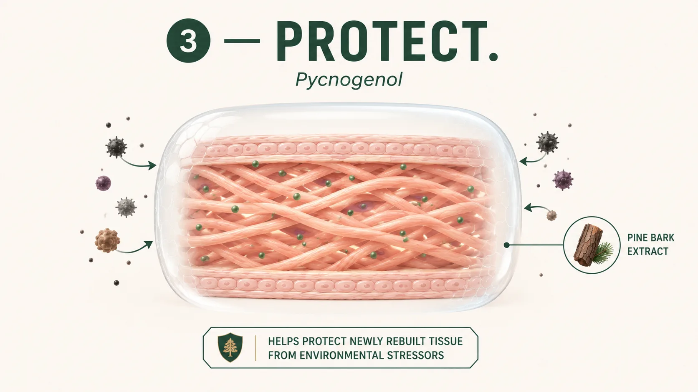
Now comes the part nobody talks about.
Glyphosate is still in your body. If you rebuild the tissue and don’t protect it, the poison will simply start damaging everything all over again. It’s like cleaning the house and leaving the door open for dust to blow back in.
Pycnogenol — an extract from French maritime pine bark — creates an antioxidant barrier that neutralizes glyphosate and protects the rebuilt tissue.
Third leg. Without it, you risk losing the progress you made.
STEP 4 — REACTIVATE (Tongkat Ali)
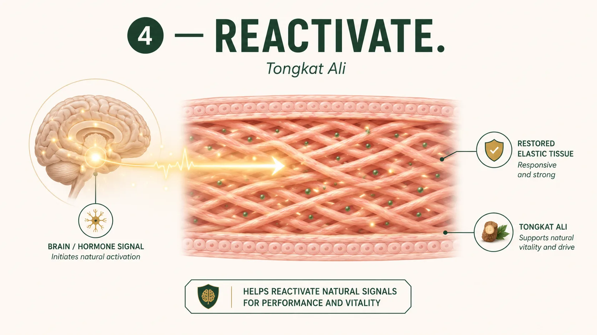
Now that the structure is rebuilt and protected, the body needs to remember how to use it.
Tongkat Ali reactivates dormant hormonal signals. It doesn’t force testosterone higher — it gets the receptors responding again. It’s like turning the ignition in a car that had been sitting still, only now with a new engine.
Fourth piece. Without it, you have healthy tissue that still doesn’t receive the “start” signal to function.
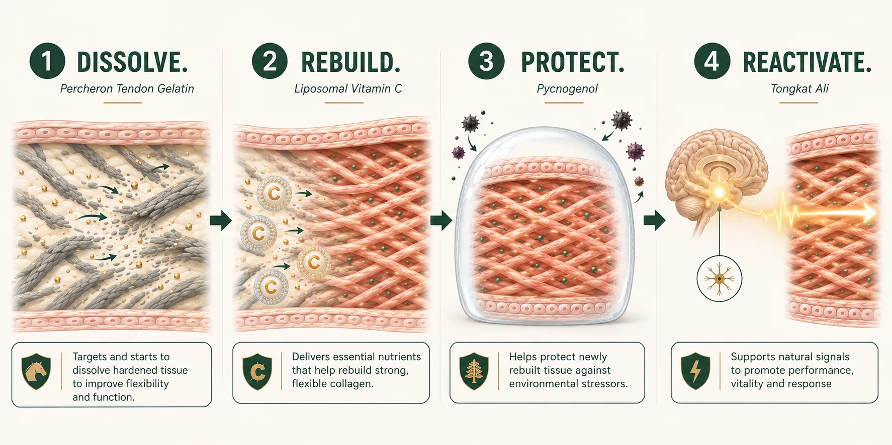
Why You Won’t Be Able to Build This at Home
You’re probably already holding your phone thinking what I thought: “Great. I’ll just buy all four.”
I tried. I’m a formulator — it was the most obvious thing in the world to me. And it still took months to make it work, for three reasons:
The source. Horse gelatin isn’t something you find on a normal store shelf. If you find it easily available online, know that it’s a scam. And you can’t just buy any collagen, because most of what is sold as generic collagen was made for skin and nails at the lowest possible cost.
The dose. Four correct ingredients at the wrong doses are not the formula. They are just four expensive containers.
The consistency. Mixing multiple powders with a scale, four different measurements, a cup, stirring, and patience is a process most people abandon. I quit my own version in the third week because it was so annoying and unpleasant. You probably won’t do differently.
So I realized I wasn’t going to solve this on my home workbench.
I started writing down every discovery, every function of every ingredient.
Every detail. Source. Dose. Ratio. Form.
I documented everything the way I would with any formulation project — except this time I took it to the place that could actually build it.
Because I was convinced the concept could work. It just had to be put into the right format.
We Had to Bring This to the World...
I knew I couldn’t do it alone.
As a formulator, I knew some of the most respected laboratories in the United States.
Without thinking twice, I picked up the phone and called the only place I truly trusted: NLabs.
If you’ve never heard of them, let me explain.
They aren’t just another supplement company. They are the real innovators behind some of the biggest advances in natural health — including creatine and the purest form of vitamin C ever produced.
But most important? They are independent. No ties to Big Pharma.
In a world full of corruption and deception, NLabs was my only chance to do this the right way.
So I contacted their Director of Research, a man known for challenging conventional medicine with natural science and real results.
At first, he hesitated...
After all, this was the kind of project the FDA would do everything it could to block — and bury.
But when I showed him the laboratory data... the power of hydrolyzed Percheron collagen... the microscope images of Toxic Plaques being dissolved...
He stood up, looked me straight in the eye, and said:
— “Wade, if what you’re showing me is real... this is going to revolutionize men’s health.”
We both knew what was at stake.
This wasn’t just another formula — it was a real chance to reverse erectile dysfunction at the root.
Not just manage it... Not just mask the symptoms... But completely eliminate the Toxic Plaques that were silently destroying the sex lives of millions of men across America.
A few weeks later, we shook hands — and the mission began.
For six straight months, the NLabs team worked day and night...
We ran test after test, adjusting every ratio, every detail, until we reached the balance we wanted.
And finally — we got it.
We cracked the code.
Then I became the first person to test it.
And it was the first morning in years I woke up with a morning erection.
A natural erection. Spontaneous. No pill. No injection.
I almost couldn’t believe it. I looked down as if I were seeing a ghost.
But that was only the beginning...
This Is What Happens When You Follow All 4 Steps...
When I finally tested all four ingredients together — in the right order, at the right dosage, in the right format — the result felt immediate to me.
1–3 Days
1–3 Days
The first thing I noticed: morning erections came back.
They weren’t strong, but they were real. Something I hadn’t seen in years.
1 Week
1 Week
Nighttime erections increased.
I would wake up and realize my body still “remembered” how to do it. It was like a switch had been turned back on.
2 Weeks
2 Weeks
I was able to maintain an erection for more than 10 minutes without effort.
I literally cried in the bathroom. It had been years since I felt that.
1 Month
1 Month
Sex — REAL sex — without Viagra.
No planning. No anxiety. It just happened. Naturally. Spontaneously. Like the old days.
2 Months
2 Months
My size increased.
Not dramatically, but noticeably. Thickness too. My wife noticed immediately when we were intimate.
4 Months
4 Months
The fibrosis reversed.
I had tests done. Compared them with my earlier tests. The scar tissue had decreased dramatically. Elastic tissue was back.
6 Months
6 Months
Full protocol. The sex life I had 20 years ago.
Firm, lasting, reliable erections. No anxiety. No shame. No fear of failing.
First the Erections Came Back. Then Everything Came Back.
When my body started responding again, I stopped avoiding my wife.
I started initiating again. Pulling her close by the waist. Kissing her without being afraid of what would happen next.
And we started having sex again — a lot.
Sometimes in the morning. Sometimes at night. There were weeks when it was practically every day.
But what affected me most was seeing her desire come back.
She started seeking me out. Teasing me. Touching me again the way she had years before.
One night, after sex, she looked at me and said:
“That’s the man I married.”
That’s when I realized:
I hadn’t only gotten my erections back.
I got my confidence back.
I got my wife’s desire back.
And I got my marriage back.
The Real “Horse Gelatin Trick”
After seeing the results in myself, I knew I couldn’t keep it to myself.
That’s when we finalized the formula and launched Horse Jello®.
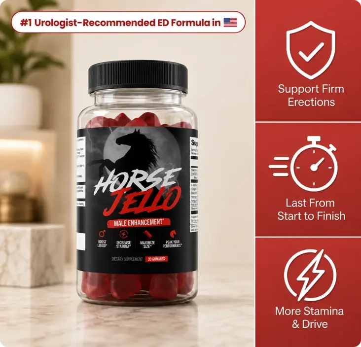
The legitimate, complete “Horse Gelatin Trick.”
The original recipe. Complete. In one gummy.
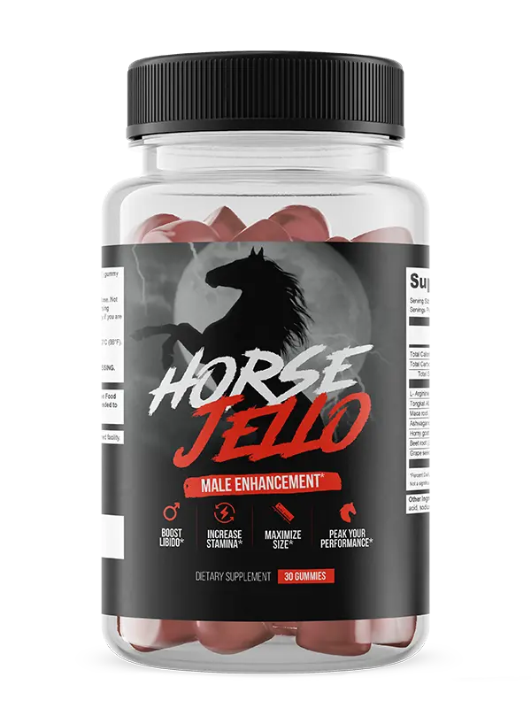
- Best for
- Erectile dysfunction and weak, unreliable erections.
- Ingredients
- Percheron Collagen, Liposomal Vitamin C, Pycnogenol, and Tongkat Ali
- How to use
- One gummy a day
- Quality
- FDA-registered facility
GMP-certified - Privacy
- Discreet, unmarked box
- Guarantee
- 90-day money-back guarantee
Let me be clear about what it isn’t.
It isn’t a drug. It isn’t Viagra. It isn’t a hormone. It isn’t something you take before sex.
And it isn’t the internet version. It’s the whole recipe.
Inside are the four ingredients — in the exact proportion, order, and dosage the formula calls for.
Literally the same combination I took, and the same combination the viral videos never finished explaining.
No injections. No prescription. No need to take it before sex. No side effects. No embarrassment from having to explain.
It works in the background. Day after day, rebuilding what was damaged.
Real Men. Real Results.
Robert M., 58 — Texas ✓ Verified Buyer
Week 5, And My Wife Cried
“I'll be honest, I almost quit in week 3 just like Wade says. Nothing was happening and I felt like a fool. Then one morning in week 5 I woke up and there it was — something I hadn't seen in six years. My wife cried when I told her. Stick with it past week 3. I mean it.”
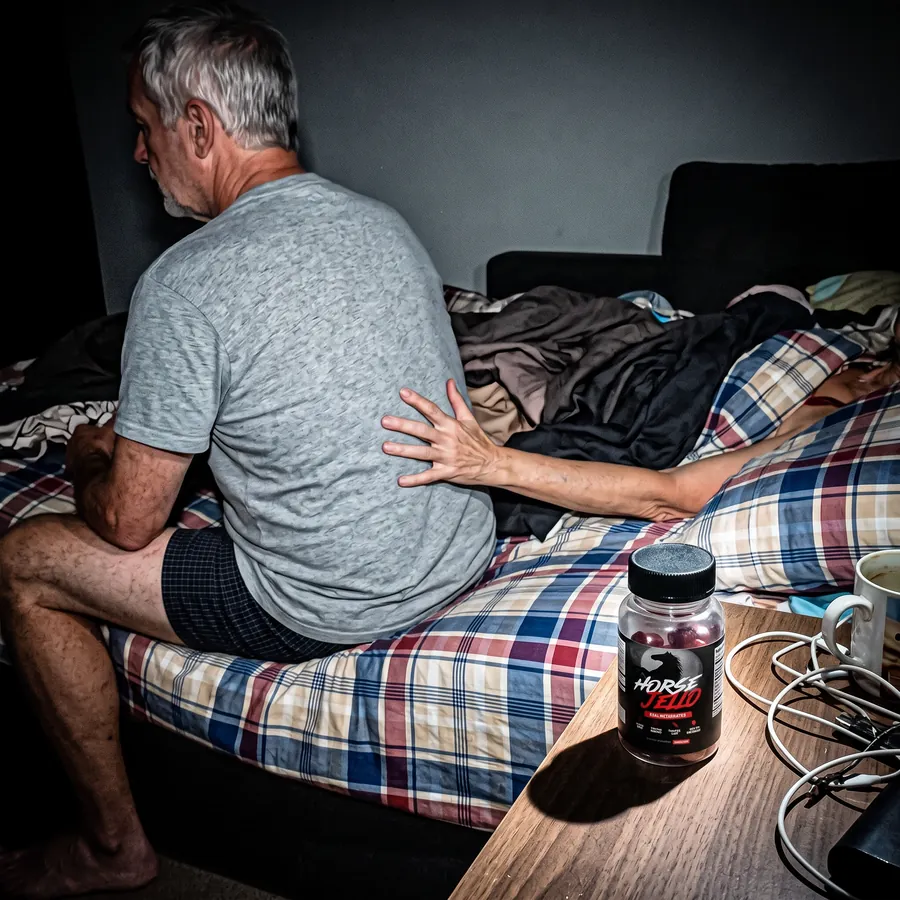
James K., 61 — Florida ✓ Verified Buyer
Morning Erections Almost Every Day Now
“I tried the gelatin trick from a YouTube video for two months and got nothing. Turns out I was only doing one of the four steps. This is the real version. Month 2 now and my morning erections are back almost every day. No pill has ever done that for me.”
Dennis W., 54 — Ohio ✓ Verified Buyer
Nothing To Time. Nothing To Hide.
“Viagra worked for me but I hated planning my own marriage like a dentist appointment. With Horse Jello there's nothing to time, nothing to hide in the truck. It just happens naturally now. My wife noticed the difference before I even told her what I was taking.”
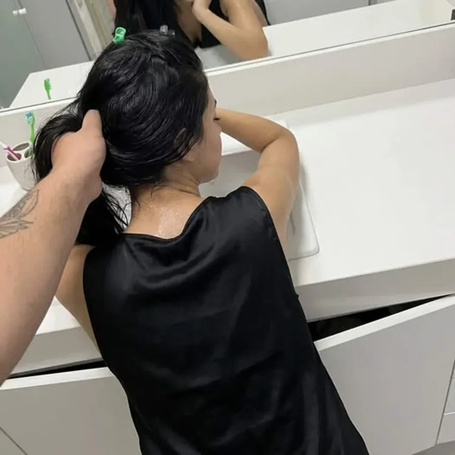
Frank T., 65 — Arizona ✓ Verified Buyer
The Clock Rolled Back 15 Years
“I'm 65 and my doctor told me the same four words: normal at your age. I refused to accept that. Twelve weeks in and I feel like the clock rolled back 15 years. Firmer, lasting, and no headache like the pills gave me. I ordered the full 6-month supply the same day.”
Michael S., 49 — Pennsylvania ✓ Verified Buyer
We Are Like Newlyweds Again
“What got me was the confidence. For years I avoided my own wife because I was afraid of failing again. That voice in my head is just... gone. We are like newlyweds again and she keeps asking what changed. Best money I have spent on my health, period.”
Paul H., 57 — Georgia ✓ Verified Buyer
Skeptical At First. Believer By Month 2.
“Skeptical doesn't begin to cover how I felt ordering a gummy for this. But the sponge explanation made more sense than anything three urologists ever told me. First signs came around day 10. By month 2, real spontaneous sex with no planning. I'm a believer.”
4 Signs This Was Made for a Man Exactly Like You
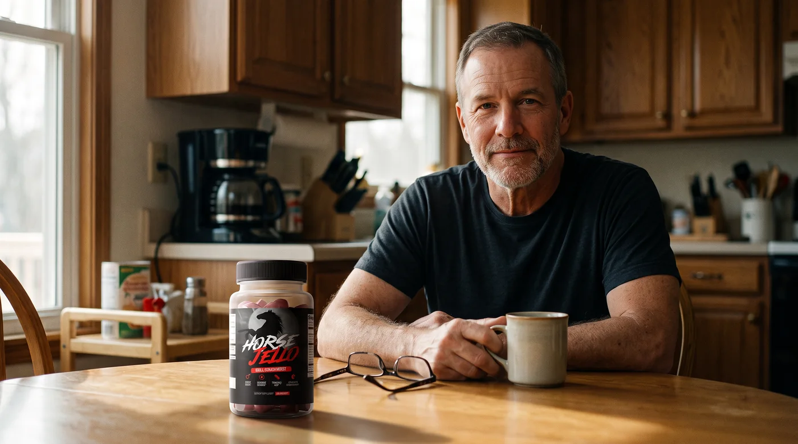
For the man who still has desire. If the problem were lack of desire, this would be a different conversation. But you want her. You look at her and you want her. Your body just doesn’t keep up.
For the man who has already tried everything. If you’ve tried every possible solution, every pill, every supplement, and even the wrong version of the “Horse Gelatin Trick” and felt nothing, you are not the exception — you are the rule. But that changes now.
For the man whose body changed the rules. In your 40s, 50s, 60s. The moment the same body you had your whole life started behaving as if it belonged to someone else.
For the man who wants to stop renting his sex life. If you depend on a pill and the idea of being without it makes your stomach drop, you already understand the problem.
Who This Is NOT For
I’d rather turn you away than take your money.
Not for someone who wants results next week. Tissue regenerates in a cycle. If you aren’t willing to give this the 8 to 16 weeks the process really takes, don’t buy — you’ll quit long before the part where the result appears.
Not for someone who has never investigated the cause. Diabetes, blood pressure, circulation, medication side effects, thyroid. Get checked. I would tell you that even if I weren’t selling anything.
And not for someone looking for the cheapest bottle. If price is the deciding factor, buy generic Viagra. It will cost less to try.
The Real Cost of Not Solving This
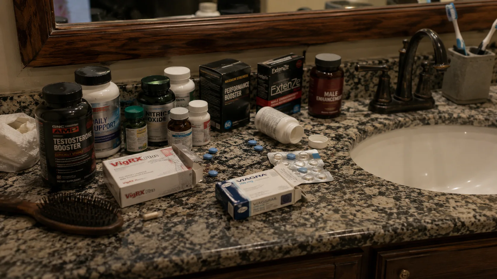
I’m going to be honest about money, because most pages like this lie exactly here.
The pill is cheap. Generic Viagra can cost less than $2 per tablet. If someone tells you the pill itself will bankrupt you, they’re trying to sell you something.
The problem was never the price.
It’s that it never ends.
There is no last box. There is no month when you buy it and you’re done. Imagine every year ahead of you opening that blister pack 40 minutes before, calculating sex, checking your wallet to make sure you brought it.
Add up what you’ve already spent. Then do the other calculation nobody does: how many years are still ahead?
That’s what I call renting. It isn’t the monthly payment. It’s that you never own the result at the end.
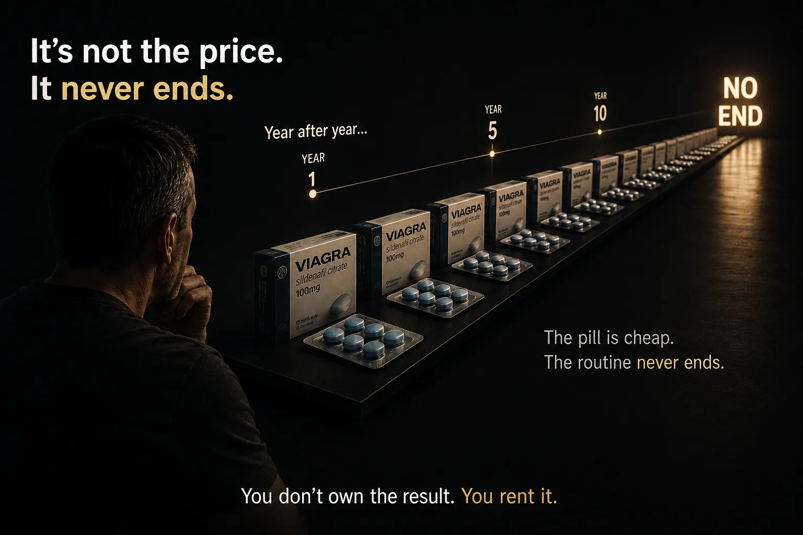
And the other routes can cost even more for the same kind of temporary dependence.
Doctor visits. Hundreds per visit. Tests. Hormone replacement that can cost hundreds of dollars.
For most men, it isn’t one huge expensive mistake. It’s $40 here, $80 there, over 10 years.
And then there is the cost that never appears on a receipt.
Weeks without touching your wife.
Every failed night.
And the worst line of all: one more year waiting to see if it gets better on its own.
It doesn’t get better on its own. That is the entire point of everything you just read.
Doing nothing isn’t free. It’s presented here as the most expensive thing you keep buying — and you pay for it every night, in the dark, without ever taking your card out of your pocket.
The Real Reason Men Quit
I need to be honest before you see the offer.
When I had that first morning erection on day six, it was real. It was early and it was real.
But the man who was having sex like he was 30 again — that didn’t happen until month three.
Not because the formula is slow. Because damaged penile tissue does not rebuild itself in a few weeks. That is biology, and no product on the planet changes that.
The first signs come quickly. But consistency is what brings your penis — and you — back to what it was.
That’s why “I started waking up like this again” can happen in days, while “I trust my body again” takes months.
And that is exactly why the small group of men who bought one bottle and stopped in the third week left thinking their bodies were the problem.
They didn’t fail. They stopped too early.
So when men ask me how many bottles to order, I stopped being polite:
Order enough to finish the cycle you start.
The Decision My Team Hated
I know you’ve already spent a lot of money.
Viagra, Cialis, doctor visits, tests, pumps, injections, imported supplements.
All together, you’ve probably already spent thousands. And you’re still here. Reading this. Looking for a real solution.
So I did something my team hated.
I could charge a lot per bottle.
Many men would pay. Because it works.
But I don’t want to create one more barrier for the man who has already lost too much time and money.
I want you to have access to the complete protocol — and not stop halfway because you ran out of product.
Because the worst mistake you can make is starting the treatment and stopping before six months. That’s exactly when the cement starts forming again, and you go back to square one.
That’s why you’ll have access to Horse Jello® today at 70% off the complete 6-month treatment.
Here’s how it works.
First, you answer 5 quick questions to calculate your Toxic Plaque Index.
I need to know your age, how long this has been happening, exactly what happens during intimacy, and what you have already tried.
At the end, you see whether Horse Jello® is right for your body. And if it is, your price and complete-cycle package appear in your result.
So don’t wait. Click the button and check your index before this batch runs out.
It’s the price of getting back your sex life. Your confidence. Your marriage. The man you used to be.
No Change, No Charge.
I know you’ve been disappointed before. Maybe even by a video that sold you one quarter of the recipe. So I take the risk.
Use Horse Jello® for 90 days. Use it properly, every morning.
If nothing changes — if you reach the end and your body looks exactly the same to you as it does today — send an email or call and ask for your money back.
No interrogation. Nobody will tell you that you “used it wrong.”
Want proof that the guarantee is real? Call or write support before buying anything.
📞 1-800-847-3921 · ✉️ support@horsejello.com
You keep the result or you keep your money.
The only thing you can’t do is stay exactly where you are.
Exactly What Happens After You Click
- Tap the button and answer five questions — age, how long this has been happening, what you’ve already tried.
- See your Toxic Plaque Index and whether your case is compatible.
- Unlock the promotional price and the complete-cycle package.
- Confirm on the secure checkout page.
- Start the morning it arrives. One gummy a day.
Three Months From Now, You’ll Be Living One of Two Stories
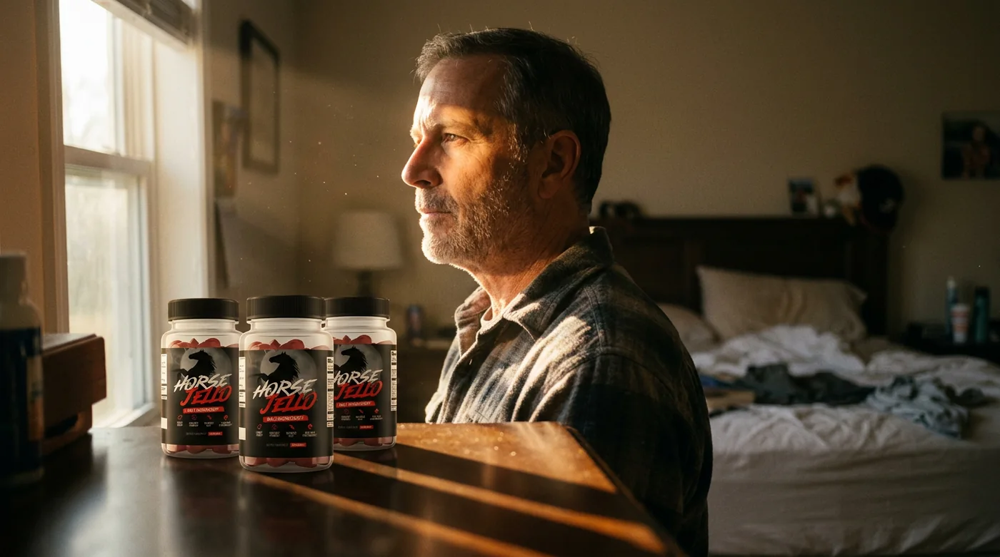
Path One Is Familiar.
Another pill. Another appointment. Another supplement some stranger swore worked. Another morning when the mirror tells you exactly what it told you yesterday.
But here is the part I need you to feel, because it’s the part men don’t let themselves think about.
It doesn’t stay the same. It gets worse.
That’s what glyphosate does. It doesn’t pause while you decide. Every month it remains in the tissue, the sponge gets more rigid, closer to the one thing that can’t be undone — because scarred tissue can come back, but dead tissue cannot.
So path one is not your penis simply staying the way it is now.
Path one is six months from now, when the sponge is more rigid than it is today and you know it, because you measure every morning in that mirror and remember exactly what it was like when you read this.
It’s the shame again. The excuse again. Her eyes pulling away again.
It’s looking in the mirror and seeing a man 10 years older than you are and slowly, silently beginning to accept him.
Path Two Is Different.
Six months from now, it’s a Saturday morning and you’re in the bathroom under that same terrible light.
And you aren’t measuring anything.
You wake up and the morning erection is there. You don’t have to check. You don’t have to hope. It’s there, as if your body remembered what to do.
You shower, get dressed, and you aren’t planning anything. You aren’t calculating when to take a pill. You aren’t creating excuses.
You go to breakfast and your wife puts her hand on your leg. You don’t tense up. You don’t freeze. You put your hand over hers.
And that night, you make love. For real. Spontaneous. Natural. No planning. No pill. No anxiety. And when it’s over, you aren’t relieved — you are present.
You lie in bed and realize the voice in your head that spent years narrating your failure — will it work today, will I lose it, will she notice — simply isn’t talking anymore.
This isn’t vanity.
It’s you, coming back.
I never asked for it to go viral. And for a long time, it bothered me that thousands of men were taking one quarter of something I had built as a complete system — and deciding their bodies were beyond help.
Now you know all four steps. You know why the order matters. And you know why yours didn’t work.
Answer the five questions. Your result appears in less than a minute.